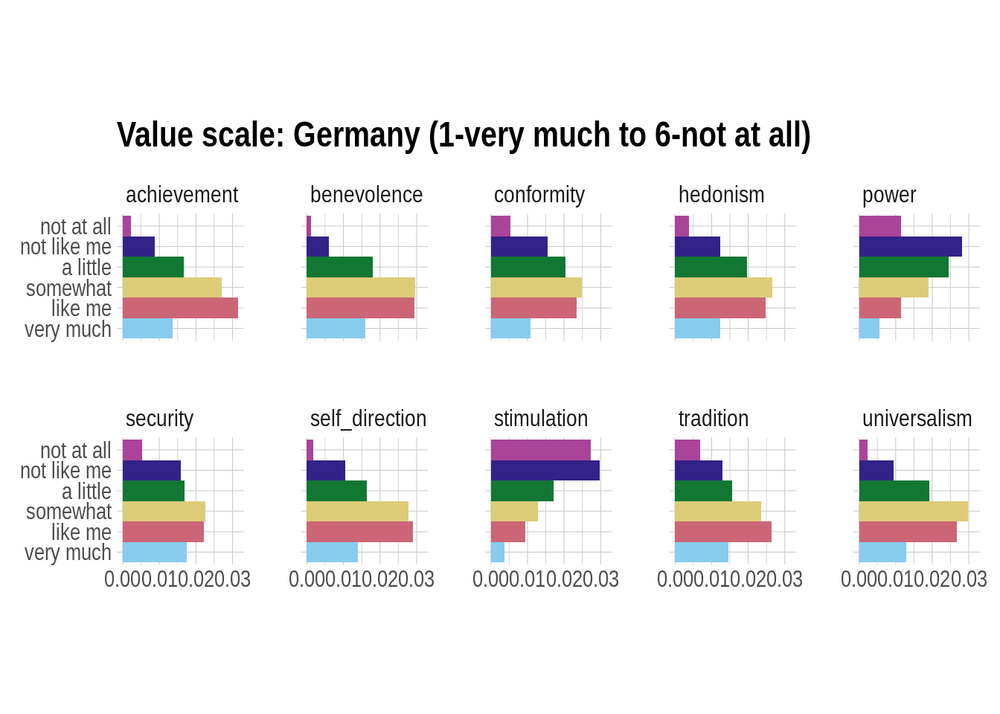
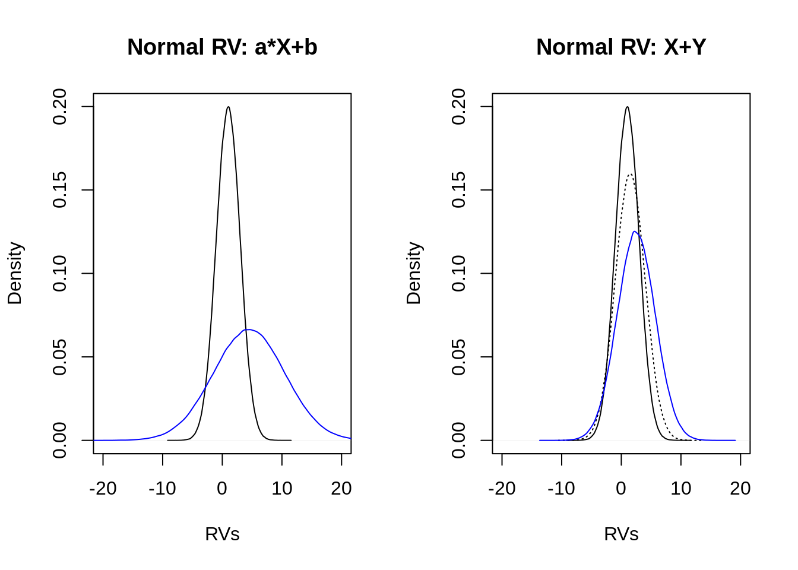
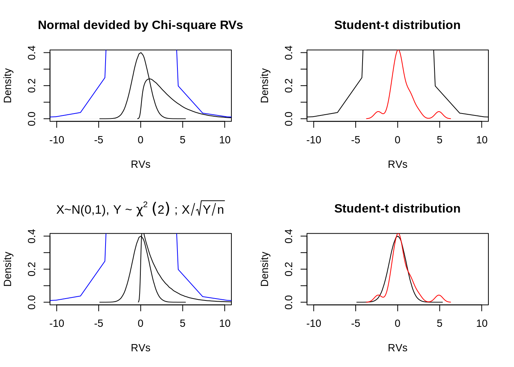

D.2 World Values Survey (wave 6 | 2010-2014)
D.2.1 Nature, origin and rationale of the data
The World Values Survey (WVS) aims to study changing values and their impact on social and political life. The WVS consists of nationally representative surveys conducted in almost 100 countries which contain almost 90 percent of the world’s population, using a common questionnaire. The WVS is the largest non-commercial, cross-national, time series investigation of human beliefs and values.
It currently includes interviews with almost 400,000 respondents. Respondents are people in the age 18 and older residing within private households in each country, regardless of their nationality, citizenship or language.
The main method of data collection in the WVS survey is face-to-face interview at respondent’s home / place of residence.
D.2.1.1 The questionnaire
The survey was conducted by using a structured questionnaire, consisting of 250 questions (here: variables) (overview of all variables) that describe 10 thematic sub-sections:
- Perceptions of life,
- Environment,
- Work,
- Family,
- Politics and Society,
- Religion and Morale,
- National Identity,
- Security,
- Science, and
- Socio-demographics.
(The document “variable description” contains the assigment of variables to topics.)
D.2.1.2 Theoretical motivation & hypotheses
Inglehart’s Concept of Postmaterialism Schwartz-Value-Scale [WORKOUT POSSIBLE HYPOTHESES/ANALYSIS]
D.2.2 Loading and preprocessing the data
## # A tibble: 6 x 440
## V1 V2 V2A V3 V4 V5 V6 V7 V8 V9 V10 V11
## <dbl> <dbl> <dbl> <dbl> <dbl> <dbl> <dbl> <dbl> <dbl> <dbl> <dbl> <dbl>
## 1 6 12 12 1 1 1 1 -2 1 1 2 1
## 2 6 12 12 2 1 2 3 4 2 2 2 2
## 3 6 12 12 3 1 3 2 4 2 1 2 2
## 4 6 12 12 4 1 1 3 4 3 1 2 1
## 5 6 12 12 5 1 1 1 2 1 1 1 3
## 6 6 12 12 6 1 2 2 2 4 1 2 1
## # … with 428 more variables: V12 <dbl>, V13 <dbl>, V14 <dbl>, V15 <dbl>,
## # V16 <dbl>, V17 <dbl>, V18 <dbl>, V19 <dbl>, V20 <dbl>, V21 <dbl>,
## # V22 <dbl>, V23 <dbl>, V24 <dbl>, V25 <dbl>, V26 <dbl>, V27 <dbl>,
## # V28 <dbl>, V29 <dbl>, V30 <dbl>, V31 <dbl>, V32 <dbl>, V33 <dbl>,
## # V34 <dbl>, V35 <dbl>, V36 <dbl>, V37 <dbl>, V38 <dbl>, V39 <dbl>,
## # V40 <dbl>, V41 <dbl>, V42 <dbl>, V43 <dbl>, V44 <dbl>, V44_ES <dbl>,
## # V45 <dbl>, V46 <dbl>, V47 <dbl>, V48 <dbl>, V49 <dbl>, V50 <dbl>,
## # V51 <dbl>, V52 <dbl>, V53 <dbl>, V54 <dbl>, V55 <dbl>, V56 <dbl>,
## # V56_NZ <dbl>, V57 <dbl>, V58 <dbl>, V59 <dbl>, V60 <dbl>, V61 <dbl>,
## # V62 <dbl>, V63 <dbl>, V64 <dbl>, V65 <dbl>, V66 <dbl>, V67 <dbl>,
## # V68 <dbl>, V69 <dbl>, V70 <dbl>, V71 <dbl>, V72 <dbl>, V73 <dbl>,
## # V74 <dbl>, V74B <dbl>, V75 <dbl>, V76 <dbl>, V77 <dbl>, V78 <dbl>,
## # V79 <dbl>, V80 <dbl>, V81 <dbl>, V82 <dbl>, V83 <dbl>, V84 <dbl>,
## # V85 <dbl>, V86 <dbl>, V87 <dbl>, V88 <dbl>, V89 <dbl>, V90 <dbl>,
## # V91 <dbl>, V92 <dbl>, V93 <dbl>, V94 <dbl>, V95 <dbl>, V96 <dbl>,
## # V97 <dbl>, V98 <dbl>, V99 <dbl>, V100 <dbl>, V101 <dbl>, V102 <dbl>,
## # V103 <dbl>, V104 <dbl>, V105 <dbl>, V106 <dbl>, V107 <dbl>,
## # V108 <dbl>, …D.2.2.1 Postmaterialism Index
Inglehart proposes a theory and an index for explaining and tapping the changing value orientations of different societies. Based on the intuition that individual value priorities reflect the level of economic affluence and physical security of society, Inglehart's postmaterialism thesis depicts a process through which economically insecure and traditional societies gradually become more tolerant, egalitarian, participatory, and nurturing. As lower order physiological needs are satisfied and individuals are socialized into more affluent and economically secure societies, traditional materialist values are slowly replaced by higher order, noneconomic concerns-postmaterialist values. (p.649) (Davis and Davenport 1999)
Materialist values: e.g. physical and economic security, ethnocentrism, low level of tolerance and respect, and the pursuit of prosperity
Postmaterialist values: e.g. pursuit of self-actualization, freedom, emancipation, participation, and quality of life
The Postmaterialism Index is an indicator of the cultural shift from postmaterialistic to materialistic orientation. He is calculated using a 4- or 12-item (here 12-item) battery pertaining to national priorities and policy preferences as perceived by the respondent.
In the WVS-questionnaire the 12-item measure is based on the variables V60 to V65:
Question: People sometimes talk about what the aims of this country should be for the next ten years. On this card are listed some of the goals which different people would give top priority.
V60 Would you please say which one of these you, yourself, consider the most important? V61 And which would be the next most important?
- A high level of economic growth (materialist)
- Making sure this country has strong defense forces (materialist)
- Seeing that people have more say about how things are done at their jobs and in their communities (post-materialist)
- Trying to make our cities and countryside more beautiful (post-materialist)
V62 If you had to choose, which one of the things on this card would you say is most important? V63 And which would be the next most important?
- Maintaining order in the nation (materialist)
- Giving people more say in important government decisions (post-materialist)
- Fighting rising prices (materialist)
- Protecting freedom of speech (post-materialist)
V64 Here is another list. In your opinion, which one of these is most important? V65 And what would be the next most important?
- A stable economy (materialist)
- Progress toward a less impersonal and more humane society (post-materialist)
- Progress toward a society in which ideas count more than money (post-materialist)
- The fight against crime (materialist)
The relevant variables for calculating the Postmaterialism Index are extracted from the wvs data set and further variables are selected that might be interesting for the analysis:
# select variables for Postmaterialism-Index
d_post_raw <- select(d_raw_wvs,
"V60":"V65", # scale items
"V2", # country
"V240", # gender participant
"V238" # working-class participant
) %>%
filter(
V2 %in% c(276,840,392,710) #276-Germany,840-United States,392-Japan,710-South Africa
) %>%
as_tibble() %>%
print()## # A tibble: 10,252 x 9
## V60 V61 V62 V63 V64 V65 V2 V240 V238
## <dbl> <dbl> <dbl> <dbl> <dbl> <dbl> <dbl> <dbl> <dbl>
## 1 3 4 4 1 3 1 276 1 3
## 2 3 1 2 3 4 1 276 1 3
## 3 3 4 4 1 1 4 276 1 3
## 4 1 3 4 3 2 3 276 1 4
## 5 1 3 2 3 1 -1 276 1 -2
## 6 1 3 2 3 1 2 276 1 2
## 7 3 1 3 2 3 1 276 1 3
## 8 3 1 4 1 3 1 276 1 1
## 9 3 1 3 1 4 2 276 2 3
## 10 3 1 2 4 2 1 276 2 2
## # … with 10,242 more rows# change values c(-5,-4,-3,-2,-1) to NAs
d_post_clean <- replace_with_na_all(d_post_raw, condition = ~.x %in% c(-5,-4,-3,-2,-1))
# inspect missing values per country and variable (item)
d_post_clean %>%
group_by(V2) %>%
summarize(
V60 = scales::percent(sum(is.na(V60))/length(V60)),
V61 = scales::percent(sum(is.na(V61))/length(V61)),
V62 = scales::percent(sum(is.na(V62))/length(V62)),
V63 = scales::percent(sum(is.na(V63))/length(V63)),
V64 = scales::percent(sum(is.na(V64))/length(V64)),
V65 = scales::percent(sum(is.na(V65))/length(V65)),
gender = scales::percent(sum(is.na(V240))/length(V240)),
workingclass = scales::percent(sum(is.na(V238))/length(V238))
)## # A tibble: 4 x 9
## V2 V60 V61 V62 V63 V64 V65 gender workingclass
## <dbl> <chr> <chr> <chr> <chr> <chr> <chr> <chr> <chr>
## 1 276 1.32% 2.44% 0.440% 0.880% 0.244% 1.12% 0% 3.71%
## 2 392 7.94% 17.8% 10.2% 21.0% 3.68% 8.64% 0% 7.37%
## 3 710 0% 0% 0% 0% 0% 0% 0% 4.90%
## 4 840 1.75% 2.15% 1.34% 2.02% 1.57% 2.15% 0% 2.28%# prepare data set
d_post_clean <-
mutate(d_post_clean,
country = factor(d_post_clean$V2, levels = c(276,840,392,710), labels = c("Germany","United States","Japan","South Africa")),
gender = factor(d_post_clean$V240, levels = c(1,2), labels = c("female", "male")),
working_class = factor(d_post_clean$V238, levels = c(1,2,3,4,5), labels = c("Upper class","Upper middle class","Lower middle class","Working class","Lower class"))
) %>%
print()## # A tibble: 10,252 x 12
## V60 V61 V62 V63 V64 V65 V2 V240 V238 country gender
## <dbl> <dbl> <dbl> <dbl> <dbl> <dbl> <dbl> <dbl> <dbl> <fct> <fct>
## 1 3 4 4 1 3 1 276 1 3 Germany female
## 2 3 1 2 3 4 1 276 1 3 Germany female
## 3 3 4 4 1 1 4 276 1 3 Germany female
## 4 1 3 4 3 2 3 276 1 4 Germany female
## 5 1 3 2 3 1 NA 276 1 NA Germany female
## 6 1 3 2 3 1 2 276 1 2 Germany female
## 7 3 1 3 2 3 1 276 1 3 Germany female
## 8 3 1 4 1 3 1 276 1 1 Germany female
## 9 3 1 3 1 4 2 276 2 3 Germany male
## 10 3 1 2 4 2 1 276 2 2 Germany male
## # … with 10,242 more rows, and 1 more variable: working_class <fct># calculating the postmaterialism-index (12-items)
post_index <- mutate(d_post_clean,
"post_materialist" = # helper function: first choice = 2/ second choice = 1
ifelse(V60 %in% c(1,2),0,2)+
ifelse(V61 %in% c(1,2),0,1)+
ifelse(V62 %in% c(1,3),0,2)+
ifelse(V63 %in% c(1,3),0,1)+
ifelse(V64 %in% c(1,4),0,2)+
ifelse(V65 %in% c(1,4),0,1),
"post_index" = # calculate postmaterialism-orientation grading
ifelse(post_materialist == 9 , "postmaterialist",
ifelse(post_materialist %in% c(8,7), "rather postmaterialist",
ifelse(post_materialist %in% c(6,5), "mixed postmaterialist",
ifelse(post_materialist %in% c(4,3), "mixed materialist",
ifelse(post_materialist %in% c(2,1), "rather materialist",
"materialist"
)))))) %>%
print()## # A tibble: 10,252 x 14
## V60 V61 V62 V63 V64 V65 V2 V240 V238 country gender
## <dbl> <dbl> <dbl> <dbl> <dbl> <dbl> <dbl> <dbl> <dbl> <fct> <fct>
## 1 3 4 4 1 3 1 276 1 3 Germany female
## 2 3 1 2 3 4 1 276 1 3 Germany female
## 3 3 4 4 1 1 4 276 1 3 Germany female
## 4 1 3 4 3 2 3 276 1 4 Germany female
## 5 1 3 2 3 1 NA 276 1 NA Germany female
## 6 1 3 2 3 1 2 276 1 2 Germany female
## 7 3 1 3 2 3 1 276 1 3 Germany female
## 8 3 1 4 1 3 1 276 1 1 Germany female
## 9 3 1 3 1 4 2 276 2 3 Germany male
## 10 3 1 2 4 2 1 276 2 2 Germany male
## # … with 10,242 more rows, and 3 more variables: working_class <fct>,
## # post_materialist <dbl>, post_index <chr># distribution of postmaterialists-types in population
post_index %>%
filter(
country == "Germany"
) %>%
group_by(`post_index`) %>%
summarize(count = n(),
percentage = scales::percent(count/2046)
) %>%
as_tibble() ## # A tibble: 6 x 3
## post_index count percentage
## <chr> <int> <chr>
## 1 materialist 21 1.03%
## 2 mixed materialist 684 33.4%
## 3 mixed postmaterialist 603 29.5%
## 4 postmaterialist 73 3.57%
## 5 rather materialist 343 16.8%
## 6 rather postmaterialist 322 15.7%# bar chart grouped by country
post_index %>%
ggplot(mapping = aes(x = post_index, y = (..count..)/sum(..count..), fill = country)) +
geom_bar(position = "fill") +
scale_x_discrete(labels = c("postmaterialist",2, 3, 4, 5, "materialist")) +
ylab("Percentage") +
ggtitle("Postmaterialism-Index: Comparision between countries")
(#fig:wvs-post bar chart grouped by country)Postmaterialism Index grouped by Germany, US, Japan and South Africa
# bar char grouped by gender
post_index %>%
filter(country == "Germany") %>%
ggplot(mapping = aes(x = post_index, y = (..count..)/sum(..count..), fill = gender)) +
geom_bar(position = "dodge") +
scale_x_discrete(labels = c("postmaterialist",2, 3, 4, 5, "materialist")) +
ylab("Percentage") +
ggtitle("Postmaterialism-Index: Germany - gender difference")
(#fig:wvs-post bar chart Germany grouped by gender)Postmaterialism Index for Germany grouped by gender
# variable: "working-class" with 1 - upper class to 5 - lower class
post_index %>%
na.omit() %>%
filter(country == "Germany") %>%
ggplot(mapping = aes(x = post_index, y = (..count..)/sum(..count..))) +
geom_bar(position = "dodge") +
scale_x_discrete(labels = c("postmaterialist",2, 3, 4, 5, "materialist")) +
facet_wrap(~ working_class, nrow = 2) +
ylab("Percentage") +
ggtitle("Postmaterialism-Index: Germany - working-class difference")
(#fig:wvs-post bar chart with facets Germany grouped by working class)Postmaterialism-Index for Germany structured by working classes
D.2.2.2 Value Scale from Schwartz
Schwartz identifies ten different values which can be summarized in two fundamental polarities along which these values cluster: egoism versus altruism (in Schwartz’s terminology: self-enhancement vs. self-transcendence) and conformism versus individualism (conservation vs. openness to change). The first dimension includes values such as power and achievement (egoism) and benevolence and universalism (altruism); stimulation and self-direction (individualism) and security and conformity (conformism) form the second dimension.
Schwartz Value Inventory (SVI) items in the wvs-questionnaire:
Question: Would you please indicate for each description whether that person is very much like you, like you, somewhat like you, a little like you, not like you, or not at all like you? (6-point Likert-scale)
- V70: It is important to this person to think up new ideas and be creative; to do things one’s own way. (Self-Direction)
- V71: It is important to this person to be rich; to have a lot of money and expensive things. (Power)
- V72: Living in secure surroundings is important to this person; to avoid anything that might be dangerous. (Security)
- V73: It is important to this person to have a good time; to “spoil” oneself. (Hedonism)
- V74: It is important to this person to do something for the good of society. (Benevolence)
- V74B: It is important for this people to help the people nearby; to care for their well-being (Benevolence)
- V75: Being very successful is important to this person; to have people recognize one’s achievements. (Achievement)
- V76: Adventure and taking risks are important to this person; to have an exciting life. (Stimulation)
- V77: It is important to this person to always behave properly; to avoid doing anything people would say is wrong. (Conformity)
- V78: Looking after the environment is important to this person; to care for nature and save life resources. (Universalism)
- V79: Tradition is important to this person; to follow the customs handed down by one’s religion or family. (Tradition)
[WORKOUT]
# select variables for Schwartz-value-scale
d_value_raw <- select(d_raw_wvs,
"V70":"V79", # scale items
"V2", # country
"V240", # gender participant
"V238" # working-class participant
) %>%
filter(
V2 %in% c(276,840,392,710) #276-Germany,840-United States,392-Japan,710-South Africa
) %>%
as_tibble() %>%
print()## # A tibble: 10,252 x 14
## V70 V71 V72 V73 V74 V74B V75 V76 V77 V78 V79 V2
## <dbl> <dbl> <dbl> <dbl> <dbl> <dbl> <dbl> <dbl> <dbl> <dbl> <dbl> <dbl>
## 1 2 4 6 5 2 -2 3 5 3 1 2 276
## 2 4 4 1 2 -2 3 1 5 3 4 2 276
## 3 3 5 5 4 3 -2 5 6 5 2 2 276
## 4 2 4 5 4 4 -2 4 3 3 3 5 276
## 5 3 4 4 2 -2 3 3 4 5 2 3 276
## 6 2 4 2 3 -2 2 2 5 2 2 3 276
## 7 2 2 1 1 -2 1 1 6 2 1 6 276
## 8 1 3 4 5 -2 4 3 5 5 3 3 276
## 9 1 1 3 1 -2 1 1 6 1 1 1 276
## 10 2 4 3 3 -2 3 4 4 4 3 5 276
## # … with 10,242 more rows, and 2 more variables: V240 <dbl>, V238 <dbl># change values c(-5,-4,-3,-2,-1) to NAs
d_value_clean <- replace_with_na_all(d_value_raw, condition = ~.x %in% c(-5,-4,-3,-2,-1))
# inspect missing values per country and variable (item)
d_value_clean %>%
group_by(V2) %>%
summarize(
V70 = scales::percent(sum(is.na(V70))/length(V70)),
V71 = scales::percent(sum(is.na(V71))/length(V71)),
V72 = scales::percent(sum(is.na(V72))/length(V72)),
V73 = scales::percent(sum(is.na(V73))/length(V73)),
V74 = scales::percent(sum(is.na(V74))/length(V74)),
V74B = scales::percent(sum(is.na(V74B))/length(V74B)),
V75 = scales::percent(sum(is.na(V75))/length(V75)),
V76 = scales::percent(sum(is.na(V76))/length(V76)),
V77 = scales::percent(sum(is.na(V77))/length(V77)),
V78 = scales::percent(sum(is.na(V78))/length(V78)),
V79 = scales::percent(sum(is.na(V79))/length(V79)),
gender = scales::percent(sum(is.na(V240))/length(V240)),
workingclass = scales::percent(sum(is.na(V238))/length(V238))
)## # A tibble: 4 x 14
## V2 V70 V71 V72 V73 V74 V74B V75 V76 V77 V78 V79
## <dbl> <chr> <chr> <chr> <chr> <chr> <chr> <chr> <chr> <chr> <chr> <chr>
## 1 276 1.86% 0.929% 0.88… 1.12% 50.0% 50.6% 1.27% 1.08% 0.68… 0.63… 0.83…
## 2 392 10.9% 7.16% 7.98% 7.49% 10.6% 7.16% 10.7% 9.91% 9.17% 7.00% 9.62%
## 3 710 0.821% 1.05% 0.96… 0.87… 1.22% 1.36% 1.36% 1.42% 1.42% 1.47% 1.22%
## 4 840 1.48% 1.57% 1.61% 1.70% 2.15% 100% 1.61% 1.93% 2.11% 1.75% 1.66%
## # … with 2 more variables: gender <chr>, workingclass <chr># use V74 or V74B, depending on NA
d_value_clean <- d_value_clean %>%
mutate(V74_new = ifelse(is.na(V74)==FALSE,V74,V74B)) %>%
print()## # A tibble: 10,252 x 15
## V70 V71 V72 V73 V74 V74B V75 V76 V77 V78 V79 V2
## <dbl> <dbl> <dbl> <dbl> <dbl> <dbl> <dbl> <dbl> <dbl> <dbl> <dbl> <dbl>
## 1 2 4 6 5 2 NA 3 5 3 1 2 276
## 2 4 4 1 2 NA 3 1 5 3 4 2 276
## 3 3 5 5 4 3 NA 5 6 5 2 2 276
## 4 2 4 5 4 4 NA 4 3 3 3 5 276
## 5 3 4 4 2 NA 3 3 4 5 2 3 276
## 6 2 4 2 3 NA 2 2 5 2 2 3 276
## 7 2 2 1 1 NA 1 1 6 2 1 6 276
## 8 1 3 4 5 NA 4 3 5 5 3 3 276
## 9 1 1 3 1 NA 1 1 6 1 1 1 276
## 10 2 4 3 3 NA 3 4 4 4 3 5 276
## # … with 10,242 more rows, and 3 more variables: V240 <dbl>, V238 <dbl>,
## # V74_new <dbl># prepare tibble
d_value_clean1 <-
transmute(d_value_clean,
self_direction = factor(V70, levels = c(1,2,3,4,5,6), labels = c("very much", "like me","somewhat","a little","not like me","not at all")),
power = factor(V71, levels = c(1,2,3,4,5,6), labels = c("very much", "like me","somewhat","a little","not like me","not at all")),
security = factor(V72, levels = c(1,2,3,4,5,6), labels = c("very much", "like me","somewhat","a little","not like me","not at all")),
hedonism = factor(V73, levels = c(1,2,3,4,5,6), labels = c("very much", "like me","somewhat","a little","not like me","not at all")),
benevolence = factor(V74_new, levels = c(1,2,3,4,5,6), labels = c("very much", "like me","somewhat","a little","not like me","not at all")),
achievement = factor(V75, levels = c(1,2,3,4,5,6), labels = c("very much", "like me","somewhat","a little","not like me","not at all")),
stimulation = factor(V76, levels = c(1,2,3,4,5,6), labels = c("very much", "like me","somewhat","a little","not like me","not at all")),
conformity = factor(V77, levels = c(1,2,3,4,5,6), labels = c("very much", "like me","somewhat","a little","not like me","not at all")),
universalism = factor(V78, levels = c(1,2,3,4,5,6), labels = c("very much", "like me","somewhat","a little","not like me","not at all")),
tradition = factor(V79, levels = c(1,2,3,4,5,6), labels = c("very much", "like me","somewhat","a little","not like me","not at all")),
country = factor(V2, levels = c(276,840,392,710), labels = c("Germany","United States","Japan","South Africa")),
gender = factor(V240, levels = c(1,2), labels = c("female", "male")),
working_class = factor(V238, levels = c(1,2,3,4,5), labels = c("Upper class","Upper middle class","Lower middle class","Working class","Lower class"))
) %>%
print()## # A tibble: 10,252 x 13
## self_direction power security hedonism benevolence achievement
## <fct> <fct> <fct> <fct> <fct> <fct>
## 1 like me a li… not at … not lik… like me somewhat
## 2 a little a li… very mu… like me somewhat very much
## 3 somewhat not … not lik… a little somewhat not like me
## 4 like me a li… not lik… a little a little a little
## 5 somewhat a li… a little like me somewhat somewhat
## 6 like me a li… like me somewhat like me like me
## 7 like me like… very mu… very mu… very much very much
## 8 very much some… a little not lik… a little somewhat
## 9 very much very… somewhat very mu… very much very much
## 10 like me a li… somewhat somewhat somewhat a little
## # … with 10,242 more rows, and 7 more variables: stimulation <fct>,
## # conformity <fct>, universalism <fct>, tradition <fct>, country <fct>,
## # gender <fct>, working_class <fct># rearrange tibble for plotting
d_value_clean1 <- d_value_clean1 %>%
pivot_longer(
cols = self_direction:tradition,
names_to = "value",
values_to = "rating"
) %>%
print()## # A tibble: 102,520 x 5
## country gender working_class value rating
## <fct> <fct> <fct> <chr> <fct>
## 1 Germany female Lower middle class self_direction like me
## 2 Germany female Lower middle class power a little
## 3 Germany female Lower middle class security not at all
## 4 Germany female Lower middle class hedonism not like me
## 5 Germany female Lower middle class benevolence like me
## 6 Germany female Lower middle class achievement somewhat
## 7 Germany female Lower middle class stimulation not like me
## 8 Germany female Lower middle class conformity somewhat
## 9 Germany female Lower middle class universalism very much
## 10 Germany female Lower middle class tradition like me
## # … with 102,510 more rows# flipped bar chart
d_value_clean1 %>%
na.omit() %>%
filter(country == "Germany") %>%
ggplot(mapping = aes(x = rating, y = (..count..)/sum(..count..), fill = rating)) +
geom_bar(
show.legend = FALSE,
width = 1
) +
theme(aspect.ratio = 1) +
labs(x = NULL, y = NULL) +
coord_flip() +
facet_wrap(~ value, nrow = 2) +
ggtitle("Value scale: Germany (1-very much to 6-not at all)")
# Bar chart and Coxcomb chart
d_value_clean1 %>%
na.omit() %>%
filter(country == "Germany") %>%
ggplot(mapping = aes(x = rating,y = (..count..)/sum(..count..), fill = rating)) +
geom_bar(
show.legend = FALSE,
width = 1
) +
theme(aspect.ratio = 1) +
labs(x = NULL, y = NULL) +
coord_polar() +
facet_wrap(~ value, nrow = 2) +
ggtitle("Value scale: Germany")
# bar chart - grouped by countries and values
d_value_clean1 %>%
na.omit() %>%
filter(country %in% c("Germany", "Japan", "South Africa")) %>%
ggplot(mapping = aes(x = rating, y = (..count..)/sum(..count..), fill = country)) +
geom_bar() +
facet_wrap(~ value, nrow = 3) +
scale_x_discrete(labels = c(1,2,3,4,5,6)) +
ylab("percentage") +
ggtitle("Value scale: Germany, Japan, South Africa (1-very much to 6-not at all)")
References
Davis, Darren W, and Christian Davenport. 1999. “Assessing the Validity of the Postmaterialism Index.” American Political Science Review 93 (3). Cambridge University Press: 649–64.